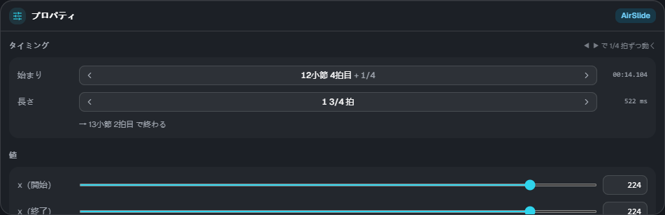
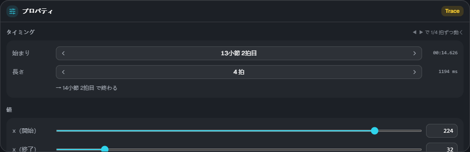

プロパティと要素
プロパティ

タイムラインで要素を1つ選ぶと、右下のプロパティで値を編集できます。複数選んだときは、選んだ数と操作のヒントが出ます。
タイミング
- 始まり: 「小節・拍目＋分数」で表示します。◀ ▶ で拍スナップの刻みずつ動きます
- 長さ: 区間のある要素だけ。◀ ▶ で伸び縮みします。下に終わりの位置が出ます
- 右端に、ゲームの時刻（ms）が出ます。
lane3d.exにはこの ms で書かれます
値
スライダーか数字の欄で変えます。x・幅・高さは 0〜255（床のノーツと同じ座標。64 がおよそ1レーン）です。

- 動き方（ease）: 0 直線 / 1 遅く出て加速 / 2 速く出て減速 / 3 両端がゆるやか
- グループ: 空中要素・トレースは、ノーツグループと同じ流れ方にできます（空なら譜面の scroll どおり）。→ 流れ方
色（#rrggbb）や wave の波長は、今のところ ES3 Studio では変えられません。lane3d.ex に書いてあるものはそのまま残ります。
要素の種類
| 種類 | 段 | 内容 |
|---|---|---|
| Tap / Wipe | 床 | 床の単発ノーツ。プロパティで Tap と Wipe を切り替え、フリックの向き（← ↑ →）を付けられる |
| Slide | 床 | 中継点をたどる床の帯。プロパティの「中継点」で点を足す・最後の点を消す |
| AirTap | 空中 | 空中判定線の上の単発ノーツ |
| AirLift | 空中 | 同じ x のまま、床 ⇄ 空中判定線を行き来する帯（上げる / 下ろす）。長さ 0 にすると、その瞬間に移る「直角」 |
| AirSlide | 空中 | 空中判定線の上を横に動く帯 |
| Trace | トレース | 判定の無い飾りの線。x と高さを同時に動かせるので、斜めの動きもできる |
| Guide | トレース | 床に置く半透明の帯（判定なし）。位置と幅が変わる |
| カメラ演出（cam） | カメラ | 傾き・位置・距離・回転・ズームなど。区間の後は終了値のまま（自動では戻らない） |
| 画面演出（fx） | 演出 | 暗転・ビネット・ノイズ・波・色収差・フラッシュ・揺れ・グリッチなど |
要素のくわしい決まり（取り方・警告の条件など）は、スキン Extra-Slide v3 の説明を見てください。 ES3 Studio のプレビューと読込結果には、ゲームと同じ警告・却下が出ます。